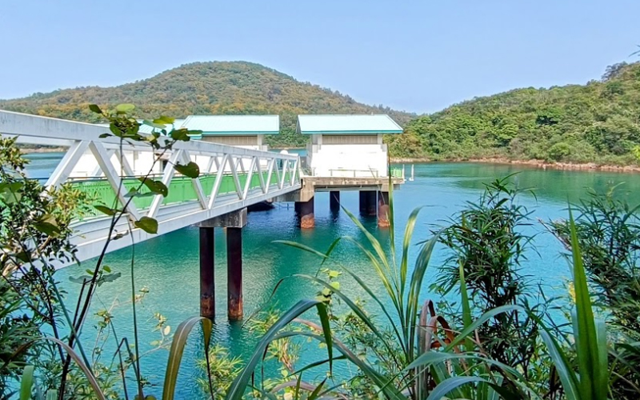
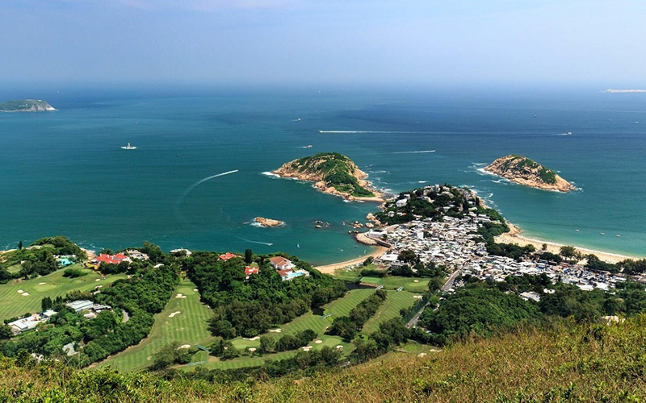

TAI O | 大澳
Tai O is a charming fishing village located on the western side of Lantau Island in Hong Kong. Known for its rich cultural heritage and traditional lifestyle, Tai O offers visitors a glimpse into the past, showcasing a way of life that has largely disappeared in the bustling city. The village is famous for its stilt houses, vibrant markets, and serene natural surroundings. Tai O is renowned for its handmade crafts and variety of dried seafood, including shrimp, fish, and squid. Locals have been drying seafood for generations, and the products are often sold in street markets. Another must-buy item is the shrimp paste, a popular local delicacy made from fermented shrimp and is a key ingredient in many traditional Cantonese dishes. You can try many traditional snacks such as taro balls and coconut candies, which are made using secret recipe and reflect the village's culinary heritage.
Hoi Ha Wan X WWF | 海下灣海洋生物中心

The Jockey Club HSBC WWF Hong Kong Hoi Ha Marine Life Centre is a prominent conservation and educational facility located in the Hoi Ha Wan Marine Park, a protected area known for its rich biodiversity and stunning marine ecosystems. Established by the World Wide Fund for Nature (WWF) Hong Kong, the centre aims to promote marine conservation, conduct marine research, and educate the public about the importance of protecting marine life. Visitors can join guided tours led by knowledgeable staff who share insights about marine life, conservation efforts, and the importance of the Hoi Ha Wan Marine Park. These tours often include visits to the nearby coral reefs. Besides, you can explore various exhibits that showcase the rich diversity of marine species found in Hong Kong waters and participate in educational workshops/programs for schools and families, focusing on marine biology, ecology, and conservation practices. The centre organizes volunteer programs irregularly for environmental enthusiasts to contribute in activities like beach clean-ups, marine surveys, and educational outreach. Please be reminded to make a reservation in advance of your visit!
DRAGON'S BACK | 龍脊

Dragon's Back is one of Hong Kong's most popular hiking trails because of its stunning views and relatively accessible route. Located in the southeastern part of Hong Kong Island, it offers a perfect blend of natural beauty, scenic vistas, and a touch of adventure, making it a favorite among both locals and tourists. The trail is named for its undulating ridges that resemble the spine of a dragon, with peaks and valleys providing breathtaking panoramas of the surrounding landscapes. The trail is considered as beginner-friendly as it has a relatively low hiking altitude (爬升高度) and is easily accessible from the city, making it a convenient getaway for a day hike.
After the initial climb, the trail levels out and follows the ridge line, where hikers can enjoy panoramic views of Shek O, Tai Long Wan, and the South China Sea. This section features a series of gentle ups and downs, resembling the back of a dragon. The trail typically ends in Shek O, a quaint fishing village with several dining options, including seafood restaurants and local eateries. It serves a great rest stop to relax and enjoy a meal after the hike.